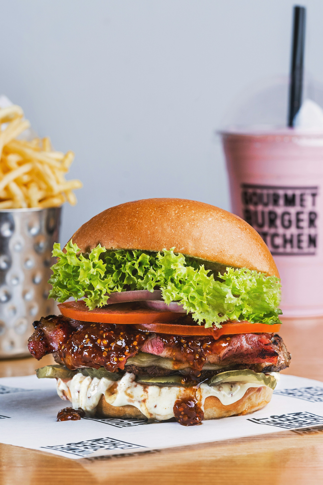

About This Recipe
Enjoy a juicy, homemade burger made with a seasoned beef patty, fresh vegetables, melted cheese, and a soft bun. This simple recipe is perfect for lunch or dinner and can be customized with your favorite toppings.
preparation
15 minutes
cooking
15 minutes
serving
2 burgers
Ingredients
Prepare these ingredients before you start cooking:
- 2 burger buns
- 250 g ground beef
- 2 slices of cheese
- 2 lettuce leaves
- 1 tomato, sliced
- 1 small onion, sliced
- 2 tablespoons mayonnaise
- Salt and black pepper to taste
- 1 teaspoon cooking oil
Step-by-Step Instructions
- Prepare the beef: Season the ground beef with salt and black pepper. Shape it into two burger patties.
- Heat the pan: Add the cooking oil to a pan and heat it over medium-high heat.
- Cook the patties: Cook the patties until they are thoroughly cooked throughout. For ground beef, the safe internal temperature is 71°C (160°F).
- Add the cheese: Place a slice of cheese on each hot patty and allow it to melt.
- Prepare the buns: Cut the burger buns in half and lightly toast the cut sides if desired.
- Assemble the burger: Spread mayonnaise on the buns. Add the lettuce, cooked patty, tomato, and onion.
- Serve and enjoy: Place the top bun over the fillings and serve your homemade burger while warm.
Helpful Tips
- Use fresh vegetables for the best flavor.
- Customize your burger with your favorite sauces.
- Wash your hands and keep raw meat separate from ready-to-eat ingredients.